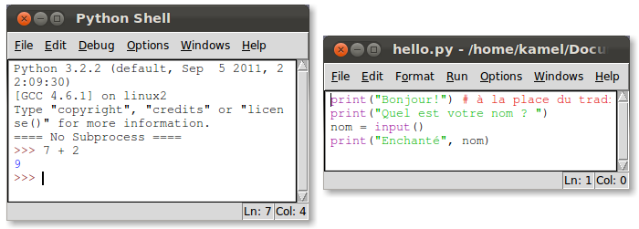
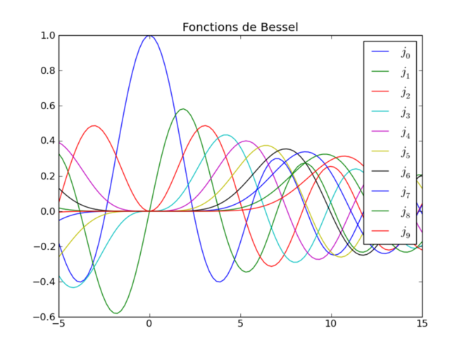
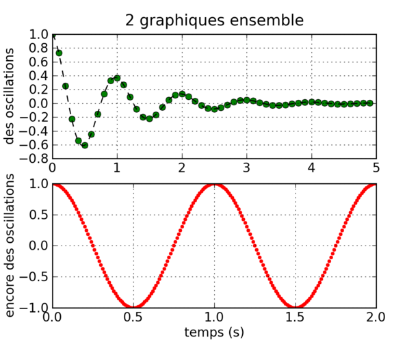
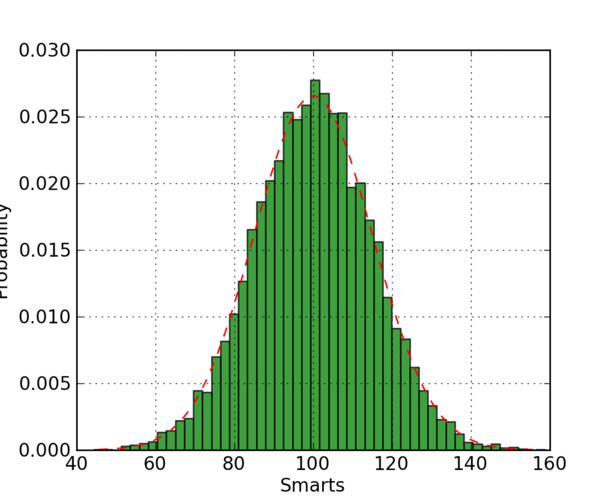
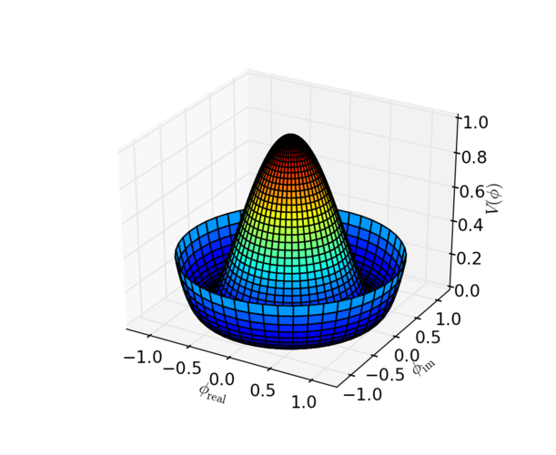

Développé en 1989 par Guido van Rossum. En 2005, il a été engagé par Google pour ne travailler que sur Python.
Les deux versions récentes de Python :
Libre et gratuit
Interprété (pas besoin de compilation)
peut être interactif (on peut s'en servir comme une calculatrice)
Impératif / Fonctionnel / Orienté Objet
Extensible (par exemple avec des modules graphiques)
Syntaxe claire et cohérente
Indentation significative (lisibilité du code)
Typage dynamique (pas de déclaration de variables)
>>> import this
The Zen of Python, by Tim Peters
Beautiful is better than ugly.
Explicit is better than implicit.
Simple is better than complex.
Complex is better than complicated.
Flat is better than nested.
Sparse is better than dense.
Readability counts.
Special cases aren't special enough to break the rules.
Although practicality beats purity.
Errors should never pass silently.
Unless explicitly silenced.
In the face of ambiguity, refuse the temptation to guess.
There should be one-- and preferably only one --obvious way to do it.
Although that way may not be obvious at first unless you're Dutch.
Now is better than never.
Although never is often better than *right* now.
If the implementation is hard to explain, it's a bad idea.
If the implementation is easy to explain, it may be a good idea.
Namespaces are one honking great idea -- let's do more of those!
Pour une installation sur le réseau informatique d'un établissement, mieux vaut laisser le responsable TICE s'en occuper.
Pour une installation sur son propre ordinateur, plusieurs solutions possibles pour chaque système d'exploitation :
Mais quelque soit le système d'exploitation, on peut l'utiliser dans un terminal ou avec IDLE
Avec l'interpréteur : on s'en sert un peu comme une calculatrice.
Avec l'éditeur : on écrit un programme dans n'importe quel éditeur de texte, puis on l'exécute à l'aide d'un terminal :
$ python nom_du_fichier.py

Pour affecter une valeur à une variable, on utilise le signe =.
>>> a = 3
>>> a = a + 1
>>> a
4
>>> b = "une chaine"
>>> # Et pour l'égalité ?
...
>>> a == 9
False
>>> a == 4
True
>>> 12 - 2*5
2
>>> 3**2
9
Cas particulier de la division
>>> 5/2 # Ici avec Python 2.x
2
>>> from __future__ import division
>>> 5/2
2.5
>>> 5//2
2
C'est plus simple avec la dernière version.
>>> 5/2 # Ici avec Python 3.x
2.5
>>> 5//2
2
print et inputlen, list et rangecomplex et absmin et maxroundsumDu point de vue mathématique, ce serait très limité si on s'arrêtait là.
On peut importer des modules supplémentaires. Cela permet de travailler avec plus de fonctions.
from math import cos
ou carrément
from math import *
z = cos(pi)*sqrt(2)
print(z)
pour tout importer.
pi, e, cos, sin, tan, exp, ...)choice, random, randint, ...)array ... )plot, ...)plot aussi ...)Il y en a beaucoup d'autres.




D'abord une fonction d'une seule variable :
def f(x):
y = x + 3
y = y**2
y = y + 5
return y
Puis une fonction de deux variables:
def g(x, y):
return 2*x - 3*y
if a > 0:
print("strictement positif")
else:
print("négatif ou nul")
Un test pour la définition d'une fonction affine par morceaux :
def g(x):
if x < 2:
return 3*x - 1
else:
return -x + 7
POURPar exemple :
>>> for k in range(4):
... print("blabla")
...
blabla
blabla
blabla
blabla
>>> list(range(4))
[0, 1, 2 , 3]
Ou encore :
for k in [2, 5, 8, 11, 14]:
print(k*k - 2*k)
Ce qui est équivalent à :
for k in range(2, 15, 3):
print(k*k - 2*k)
TANT_QUE>>> i = 1
>>> while i <= 5:
... print(i)
... i = i + 1
...
1
2
3
4
5
Pour obtenir la liste des entiers naturels de la forme $5n + 3$ :
>>> [x for x in range(51) if x % 5 == 3]
[3, 8, 13, 18, 23, 28, 33, 38, 43, 48]
La liste des valeurs d'une fonction $f$ défine sur $[0~;~5]$ par $f(x)=x^2+1$ :
>>> def f(x): return x**2 + 1
...
>>> abscisses = range(6)
>>> ordonnees = [f(x) for x in range(6)]
>>> points = zip(abscisses, ordonnees)
>>> print(points)
[(0, 1), (1, 2), (2, 5), (3, 10), (4, 17), (5, 26)]
Pratique pour calculer certaines sommes :
>>> sum([n**2 for n in range(11)])
385
Attention, comme avec les calculatrices, les résultats sont approchées.
>>> from math import sqrt
>>> a = sqrt(2)
>>> b = sqrt(3)
>>> c = sqrt(5)
>>> # testons maintenant une égalité
...
>>> a**2 + b**2 == c**2
False
Et pourtant $ (\sqrt{2})^2 + (\sqrt{3})^2 = (\sqrt{5})^2 $
Si vous voulez :
et tout ceci de façon exacte, alors les deux solutions ci-dessous peuvent répondre à vos besoins :
Sympy est un module de Python.
Sage est un logiciel de calcul mathématique, qui fait entre autres du calcul formel et dont le langage est Python.
.
##########################################################################
# Présentation réalisée avec Landslide. #
# #
# #
# Kamel Naroun et M. Gragnic #
##########################################################################
| Table des matières | t |
|---|---|
| Exposé | ESC |
| Slides en plein écran | e |
| Presenter View | p |
| Fichier source | s |
| Numéros de slide | n |
| Montrer/cacher l'écran | b |
| Montrer/cacher le contexte | c |
| Notes | 2 |
| Aide | h |